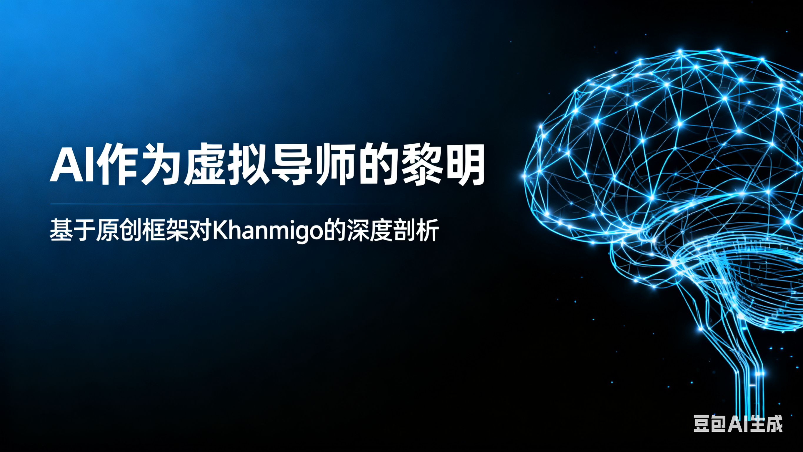
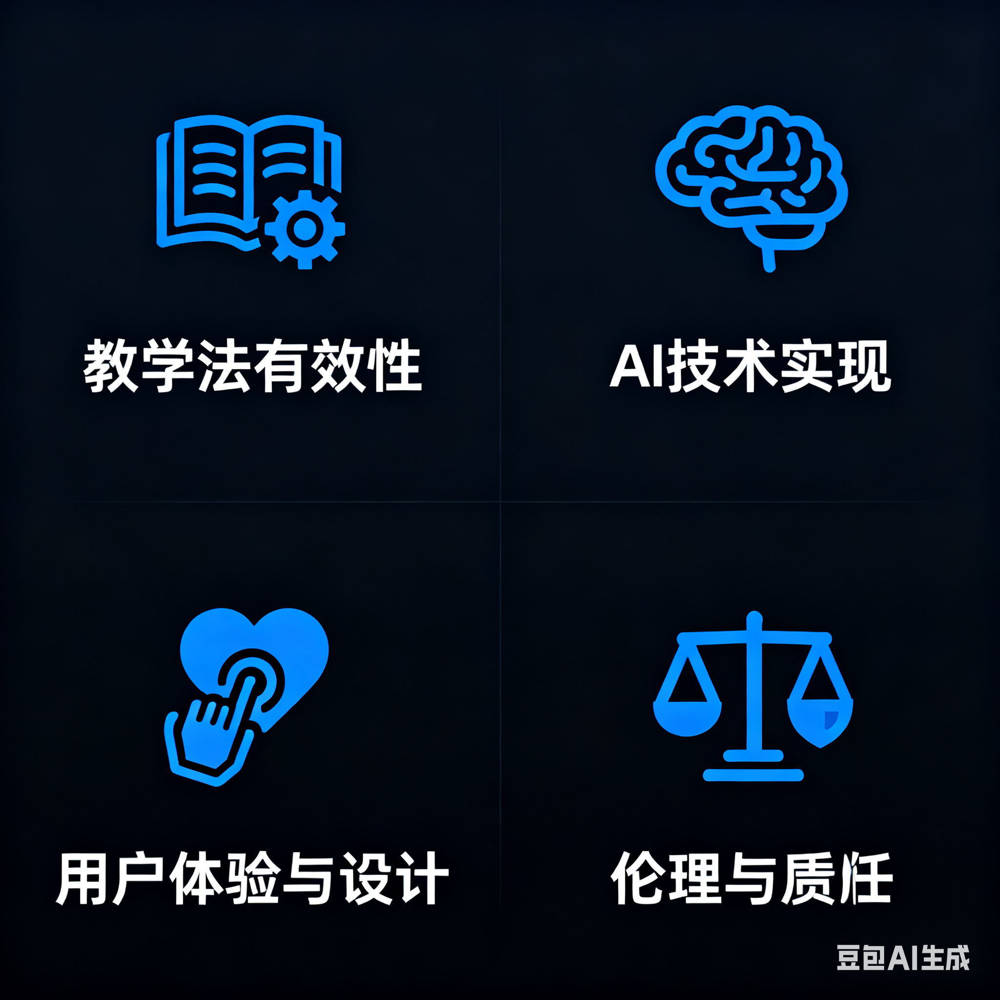

教育总是一个有趣的命题，课程是非标品，所以很难定义好坏，造成了这个行业典型的参差不齐。在人工智能浪潮席卷全球的今天，我们正处在一个教育变革的十字路口。一个核心问题摆在我们面前：AI应该成为一个无所不知的“答案机”，还是一个启发思考的“智慧导师”？
在众多探索者中，由备受尊敬的非营利教育组织“可汗学院”推出的AI辅导工具——Khanmigo，给出了一个清晰而坚定的回答。它并非简单的知识查询工具，而是被设计成一个旨在通过对话引导学生自主解决问题的虚拟导师。
本文的目的，正是要拨开围绕AI教育的喧嚣，通过我建立的一个系统性评估框架，对Khanmigo进行一次深度、审慎的剖析，以探究其真正的教育价值和局限性。
在正式分析前，我必须先亮出我的评估工具。我认为，任何AI教育产品都必须从以下四个维度进行审视，才能判断其真正的成色：

Khanmigo最核心的亮点，在于其对“不给答案”原则的恪守。它通过启发式提问引导学生自己思考，将学习的主动权真正交还给了学生。其价值核心从知识的传递转向了思维过程的训练。
基于GPT-4并被严格限制在可汗学院的知识库内，Khanmigo在核心学科上的知识准确性极高，有效规避了通用大模型的“AI幻觉”问题。对话流畅自然，但其长期的个性化能力仍有待观察，目前它更像一个完美的“单次对话教练”，而非一个长期的“私人成长顾问”。
Khanmigo无缝集成在可汗学院的课程中，体验极为连贯。AI的语言风格始终保持积极、鼓励，能有效降低学生对提问的畏惧感。这种“情感化设计” 在教育产品中至关重要，也是最容易被忽略的一环。
Khanmigo在设计之初就内置了对学术诚信的深刻思考，其“不给答案”的机制从根本上杜绝了作弊可能。同时，由非营利组织运营的背景，也使其在学生数据隐私保护方面拥有天然的信誉优势。
综合评估，Khanmigo无疑是当前AI教育领域最具里程碑意义的产品之一。它并非一个旨在取代教师的“万能AI”，而是一个定位精准的“思维训练伙伴”。
它向整个行业发出了一个清晰的信号：AI在教育中的最佳应用，不是成为更聪明的“知识引擎”，而是成为能激发人类自身智慧的“思维杠杆”。AI会是一个强有力的工具，希望它能在促进教育公平上，留下有力的一笔。